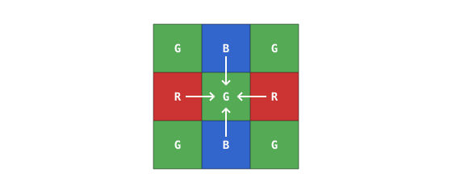
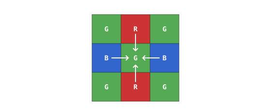

4.11. Debayering¶
Sirova Bayer sličica nosi samo jedan kanal boje po pikselu. Pretvaranje u uobičajenu trokanalnu RGB sliku znači popunjavanje dvaju nedostajućih kanala na svakom pikselu interpolacijom iz obližnjih piksela odgovarajuće boje. Ta interpolacija naziva se debayering (poznato i kao demozaikiranje). Prevladava nekoliko obitelji algoritama.
4.11.1. Super-piksel¶
Najjeftiniji pristup sažima svaku 2x2 Bayer pločicu – jednu crvenu ćeliju, jednu plavu ćeliju i dvije zelene ćelije – u jedan izlazni piksel:
crveni kanal je vrijednost crvene ćelije;
plavi kanal je vrijednost plave ćelije;
zeleni kanal je prosjek dviju zelenih ćelija.
Svaka 2x2 ulazna pločica postaje jedan izlazni piksel, pa je gotova slika upola manje širine i upola manje visine od senzora, s četvrtinom broja piksela. Super-piksel je brz i bez interpolacijskih artefakata, no cijena u razlučivosti čini ga krajnjim rješenjem – rijetko se koristi.
4.11.2. Bilinearni¶
Bilinearna interpolacija uprosječuje najbliže piksele odgovarajuće boje umjesto da ih kopira ili sažima. Točno uprosječivanje ovisi o tome koju boju bilježi središnji piksel, jer četiri slučaja raspoređuju nedostajuće kanale po 3x3 susjedstvu na različite načine.
Zeleni piksel u crveno-zelenom retku. Nedostajuća crvena vrijednost uprosječuje dva crvena susjeda lijevo i desno; nedostajuća plava uprosječuje dva plava susjeda iznad i ispod.

Nedostajuća crvena dolazi od vodoravnih crvenih susjeda; nedostajuća plava od okomitih plavih susjeda.¶
Zeleni piksel u zeleno-plavom retku. Isti oblik s zamijenjenom crvenom i plavom. Nedostajuća crvena vrijednost uprosječuje dva crvena susjeda iznad i ispod; nedostajuća plava uprosječuje dva plava susjeda lijevo i desno.

Nedostajuća crvena dolazi od okomitih crvenih susjeda; nedostajuća plava od vodoravnih plavih susjeda.¶
Crveni piksel. Nedostajuća zelena vrijednost uprosječuje četiri glavna zelena susjeda (gore, dolje, lijevo, desno). Nedostajuća plava uprosječuje četiri dijagonalna plava susjeda.

Nedostajuća zelena dolazi od četiri glavna zelena susjeda; nedostajuća plava od četiri dijagonalna plava susjeda.¶
Plavi piksel. Zrcalna slika crvenog slučaja. Nedostajuća zelena uprosječuje četiri glavna zelena susjeda, a nedostajuća crvena uprosječuje četiri dijagonalna crvena susjeda.

Nedostajuća zelena dolazi od četiri glavna zelena susjeda; nedostajuća crvena od četiri dijagonalna crvena susjeda.¶
Bilinearni pristup zadržava punu razlučivost senzora i dovoljno je gladak za većinu primjena, no i dalje pokazuje artefakte na rubovima. Oštar prijelaz između dviju boja prelazi mrežu piksela u određenoj orijentaciji, a uprosječivanje preko ruba blago ga omekšava. Tamo gdje se rubovi boje i svjetline ne poklapaju točno, u izlazu se pojavljuju slabi obojeni obrubi.
4.11.3. Iznad bilinearnog¶
Postoji niz boljih debayer algoritama. Neki koriste veća susjedstva od bilinearnog malog križa istobojnih susjeda i odvaguju uzorke pažljivije odabranim koeficijentima; drugi otkrivaju smjer lokalnih rubova i pristrano usmjeravaju interpolaciju duž tog smjera tako da rub koji prolazi kroz mrežu piksela ostaje oštar umjesto da se omekša. Oba pristupa smanjuju obojene obrube i omekšavanje rubova koje bilinearni ostavlja za sobom, po cijenu više aritmetike po pikselu i više silicija (ili više računanja na strani MCU-a).
Kvaliteta debayeringa dostupna na pojedinoj OpenMV Cam kameri specifična je za platformu – ovisi o tome što senzor i MCU na toj kameri pružaju.
4.11.4. Gdje se debayering izvodi¶
Procesor signala slike (ISP) – na samom čipu senzora ili na strani MCU-a – u većini slučajeva debayera svaku sličicu prije nego što napusti slikovni cjevovod. Korisnički kod prima gotovu trokanalnu RGB sliku, a da nikada ne dodirne sirovi mozaik.
ISP-u se također može naložiti da propusti sirovu Bayer sličicu nepromijenjenu. Sirovi Bayer zauzima manje memorije od debayerane slike – jedan bajt po pikselu naspram tri – što ga čini korisnim kada je pohrana sličica usko grlo, pri snimanju za izvanmrežnu obradu ili kada projekt želi primijeniti prilagođeni debayer algoritam u softveru.